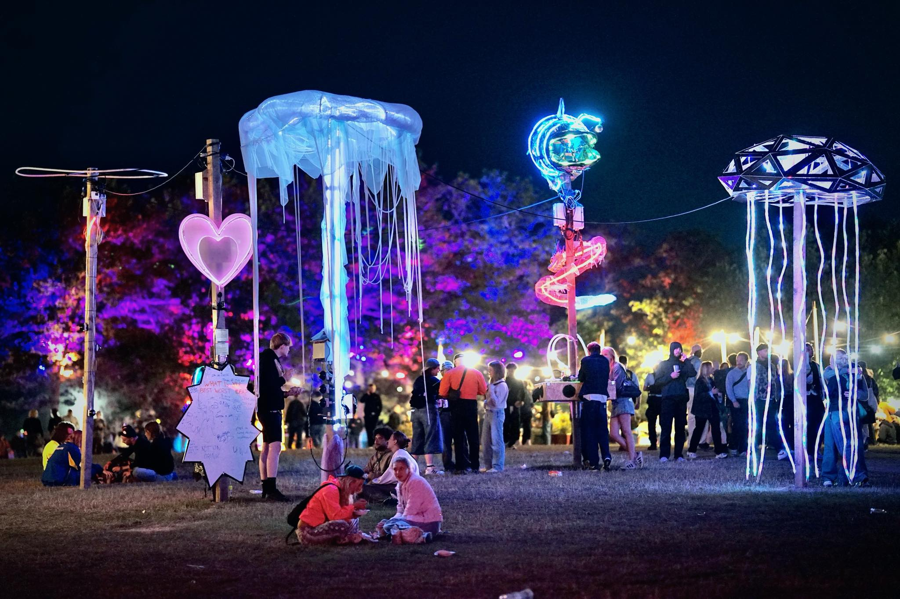

Jellyfish on Roskilde Festival
An interactive light installation reacting to human touch and proximity.

This interactive light installation was exhibited at Roskilde Festival, exploring human touch and proximity through responsive light behavior. Inspired by the movement and sensitivity of jellyfish, the piece created a shared sensory experience between humans and technology.
 ← Back to Portfolio